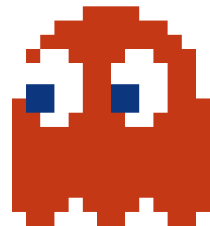
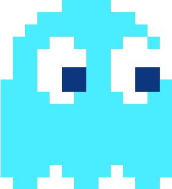
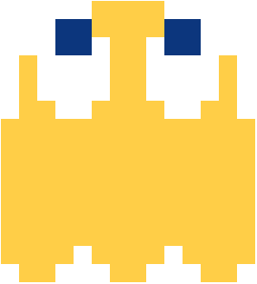

Shadow
BLINKY
- color: RED
- character: Bad-tempered, crude, bossy, bully, fast, bratty, grouchy, dangerous, mean, sarcastic, greedy, and the leader of the four.
The original Japanese name is Oikake (追 い か け, stalker), and the nickname is
Akabei (赤 ベ イ, red). In pursuit mode, uses the cell in which Pakman is located as a target. Blinky,
unlike other ghosts, increases its pursuit speed relative to the original twice per level, depending
on the number of dots eaten. If there are not enough points left, then he changes the target cell in
the dispersion mode to the square in which Pacman is, and so chases the hero in two modes. Players
called this "aggressive" ghost behavior "Cruise Elroy".
Speedy
PINKY
- color: PINK
- character: Mischievous, persistent, tricky, has a crush on Pac-Man from time to time.
The original Japanese name is Matibuse (待 ち 伏 せ, ambush), and the nickname is
Pinki (ピ ン キ ー). In pursuit, he uses a point four squares ahead of Pacman as a target. However, due
to an overflow error when Pacman moves up, Pinky uses a square four cells up and four cells to the
left of Pacman as a target.

Bashful
INKY
- color: CYAN
- character: Goofy, shy, unpredictable.
The original Japanese name is Kimagure (気 ま ぐ れ, fickle), and the nickname is
Aosuke (青 助, blue). Uses the most complex pursuit algorithm: to determine the direction of movement,
a segment is drawn, one of the ends of which is determined by Blinky's position, and the middle is 2
cells in front of Pakman. The second end of the line is the desired target point. The resulting
point is difficult to predict, so the Inca is considered the most dangerous ghost. Due to an
overflow error similar to Pinky's behavior, when Pac-Man moves up, Inca's target cell is two cells
up and two cells to the left of Pac-Man.

Pockey
CLYDE
- color: ORANGE
- character: Cowardly and seemingly dumb, but may be smarter than he lets on and doesn't really care about chasing Pac-Man.
The original Japanese name is Otoboke (お 惚 け, stupid), and the nickname is
Gudzuta (愚 図 た, slow). If Clyde is further 8 cells from Pacman, then he uses Pacman himself as a
target, like Blinky. If Pacman is closer than 8 cells, then Clyde tends to the lower left corner, as
when scattering.